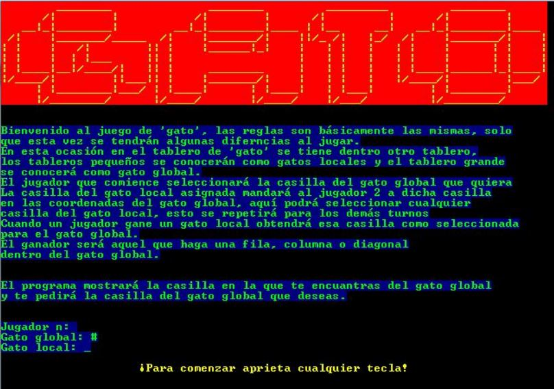
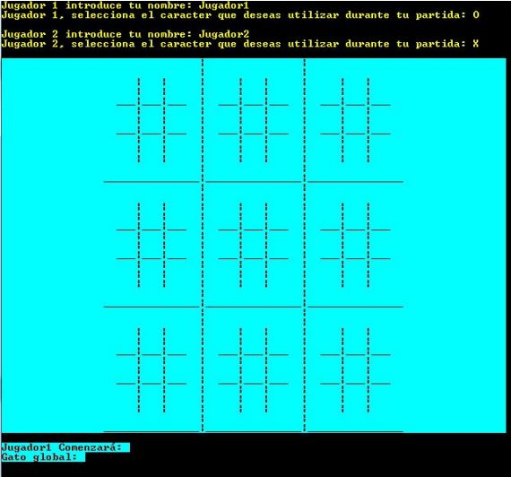
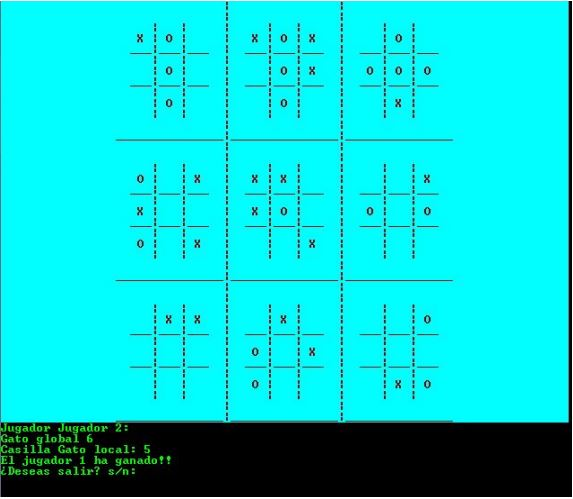

Experiencia
Proyectos escolares desarrollados
Circuito de canicas
Desarrollé como parte de un proyecto en equipo un circuito de canicas, la condición
era que la canica tenía que tener como mínimo media pulgada y las medidas totales del
circuito tenían que ser de 1[m] de altura por 50[cm] de ancho.
El diseño contenía un elevador de 1[m] que funcionaba con una banda transportadora con canastas
y tenía un motorreductor como actuador, el elevador llevaba la canica hacia una rampa, en donde tenía
dos posibles caminos, en uno se hallaba una trampa y en otro una secchión con un pivote para
devolver la canica hacia el elevador.
Cortador automático de pizzas
Este proyecto consistía en diseñar un cortador automático de pizzas grandes (30[cm]). Se conformaba de un cortador que se trasldaba en una corredera sobre un espárrago ACME y una base que giraba cada cierto tiempo, de esta manera el cortador realizaba el recorrido de ida y vuelta sobre la pizza, al finalizar un corte, la base giraba para reiniciar el ciclo.
Elevador
Hice un elevador de dos pisos con 1[m] de altura total, se controlaba por medio de dos microcontroladores: Arduino UNO y TI MSP430. Este se puede controlar por medio de la botonera incorporada o utilizando comunicación serial por medio de un programa realizado en C#.
Gatoception
Proyecto realizado en C#, el objetivo era realizar un juego de gato
añadiendo en cada casilla un tablero más de gato, es decir, nueve gatos dentro de un gato.
El juego solo es para dos jugadores y la casilla de cada jugador se asigna dependiendo del turno anterior.



Aditamento para bicicleta
Pensando en un dispositivo que ayude a generar un empleo, desarrollé en equipo un aditamento que se puede incorporar en una bicicleta para montar un negocio sobre ruedas, este se puede desplazar entre el tráfico urbano para ofrecer productos. Toda la estructura se construyó utilizando tubo de acero de una pulgada y el armado se realizó con soldadura y dobladora, contaba con llantas R 17 y puede soportar una carga de 100[kg]
Encendido de motor por medio de señales mioelectricas
Desarrollé junto a un compañero un circuito con electrónica analógica para detectar una señal mioeléctrica proveniente del bicep, la señal se adecuaba para que sirviera como indicador de encender un motor. Cuando el músculo se tensaba, el motor encendía y al estar relajado el músculo, el motor permanecía apagado.
Robot híbrido (serial y móvil)
Hice un proyecto en equipo que constaba de desarrollar un robot híbrido de servicio. Optamos por tener una configurración serial y móvil, este se encargaría de buscar objetos por medio de una cámara ubicada en el móvil, utilizando visión artificial y una vez que lo detectara, el serial lo recogería utilizando una pinza.
Experiencia profesional
enero 2019 - diciembre 2019
Fuí becario del Instituto de ingeniería, participando en un proyecto de divulgación científica llamado Microfascinantes por parte del gobierno de le Ciudad de México, específicamente la SECTEI (Secretaría de Educación, Ciencia, Tecnología e Inovación de la Ciudad de México). El objetivo era desarrollar un dispositivo didáctico que facilitara la comprension de un concepto relacionado con la microtecnología.En mi caso desarrollé un "Laboratorio en miniatura", el cual consistia en armar un circuito con microcanales utilizando piezas tipo Lego® y al final se hacía pasar líquidos de diferente consistencia con ayuda de una bomba de jeringas, y el fin era de observar una reacción química al combinar los líquidos para conocer el PH de las sustancias. Todo el sistema se desarrolló utilizando impresión 3d, corte laser y corte de materiales blandos con CNC.
El proyecto se presentó en la fiesta de las ciencias y humanidades de la UNAM, además de diez presentaciones en la CDMX en los puntos conocidos como PILARES (Puntos de Inovación, Libertad, Arte, Educación y Saberes). Al finalizar las presentaciones, acudí a una entrevista en Radio UNAM en el programa de Ingeniería en Marcha.